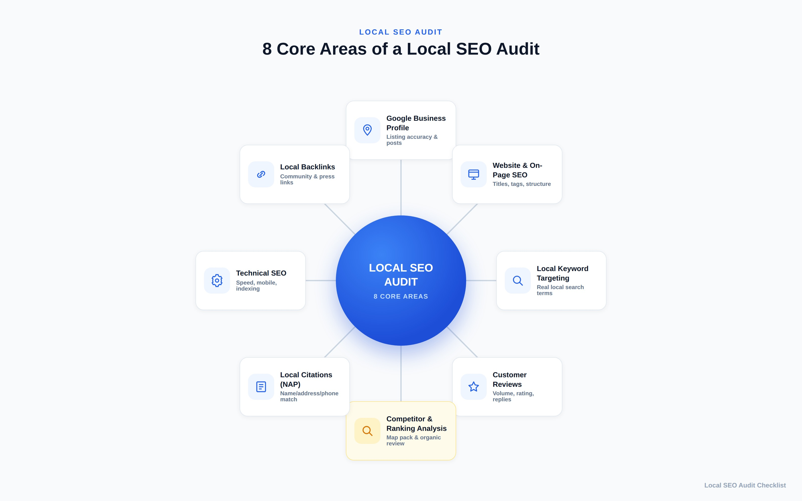
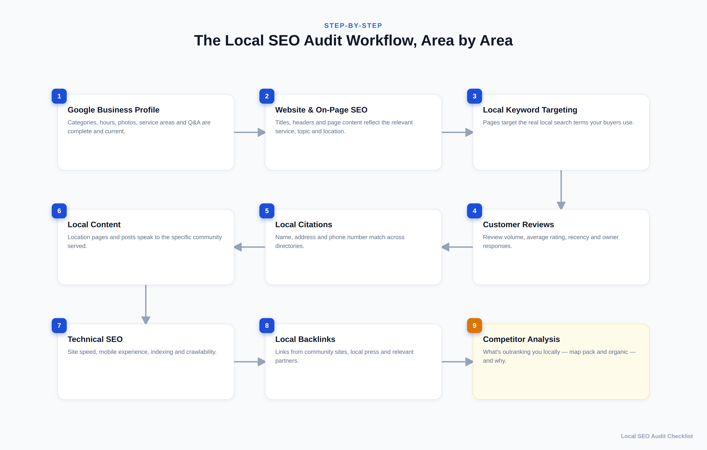
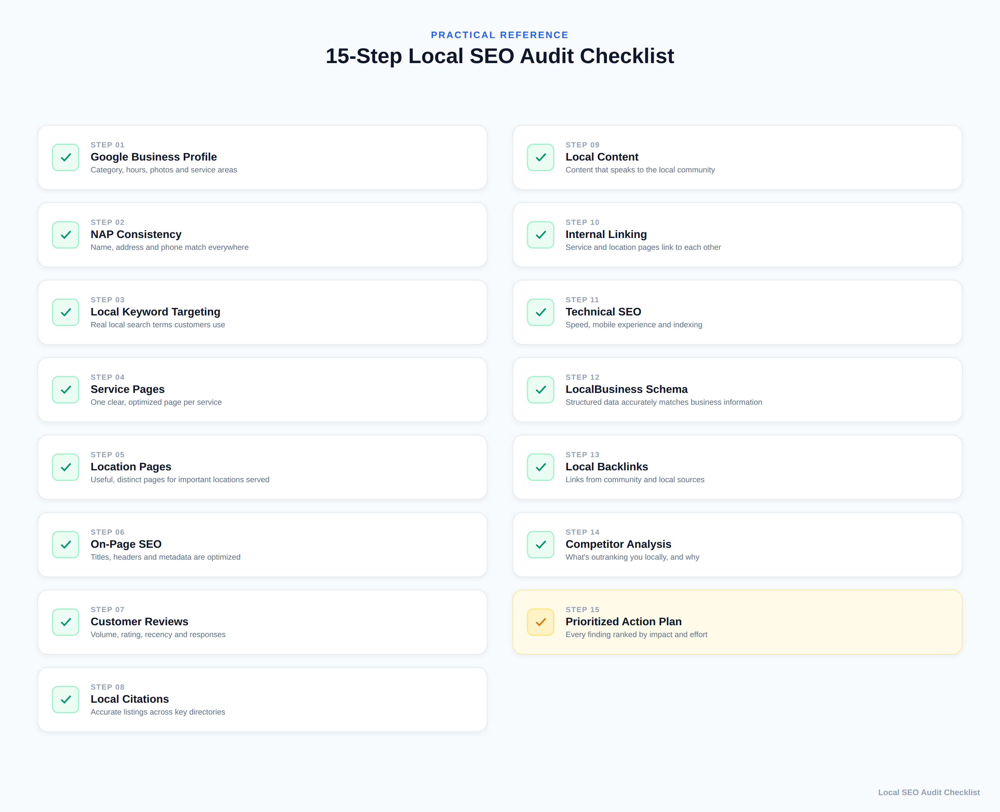
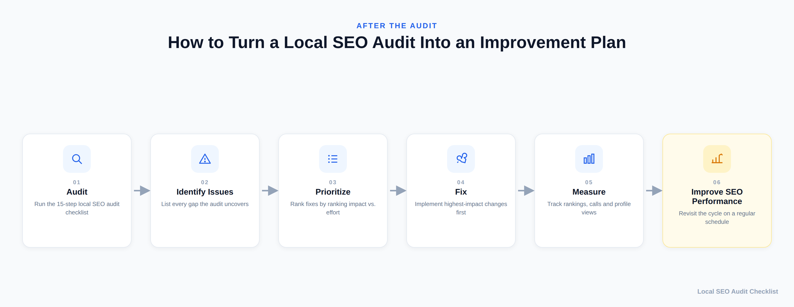

Local SEO Audit Checklist: 15 Steps to Improve Your Google Rankings
If you run a business that depends on customers finding you nearby — a clinic, a boutique, a service business, a local retailer — showing up when someone searches "[what you do] near me" is one of the highest-value things your website can do. A local SEO audit is how you find out exactly where that's breaking down, before you spend another dollar on ads or content.
This checklist walks through the same 15 areas we check whenever we audit a local business's online presence. Work through them in order, use the scorecard at the end to track what needs fixing, and you'll have a clear, prioritized action plan instead of a vague sense that "SEO isn't working."

What Is a Local SEO Audit?
A local SEO audit is a structured review of everything that determines whether your business shows up in local search results — the Google Map Pack, local organic results, and "near me" searches — and why it might not be showing up yet.
It's a more specific relative of a general SEO audit. If you haven't read our breakdown of what an SEO audit covers, that's a good primer on the broader discipline: crawlability, site health, content quality, and backlinks. A local SEO audit takes that same investigative approach but narrows in on the signals that matter specifically for location-based search: your Google Business Profile, the accuracy of your business information across the web, how well your site is built around the areas and services you actually serve, and the reviews and local links that build trust with both customers and Google.
In short: a general SEO audit asks "is this website healthy?" A local SEO audit asks "does Google — and do the people searching nearby — actually know this business exists, is legitimate, and is relevant to them?"

Local SEO Audit Checklist: 15 Essential Steps
1. Google Business Profile
Your Google Business Profile (GBP) is one of the most important elements to review in a local SEO audit, because it's what actually appears in the Map Pack. Check that your primary and secondary categories accurately describe what you do, your business hours are current (including holiday hours), your service areas are set correctly if you don't have a walk-in location, and you have a steady flow of recent photos rather than a handful uploaded once at setup. Check whether you're using GBP posts and the Q&A section, and whether questions from customers are actually being answered. A profile that was set up once and never touched again is a common, fixable gap.
2. Business Name, Address, and Phone Consistency (NAP)
Search this exact combination of your business name, address, and phone number across your website, GBP, and the major directories you're listed on (Yelp, Bing Places, Facebook, industry-specific directories). Even small inconsistencies — a suite number dropped, "St." vs. "Street," an old phone number still live on one directory — make your business look less consistent and less trustworthy to both customers and the platforms trying to verify who you are. It's tedious to check manually, but it's one of the more straightforward items on this list to fix, because it's binary: either your information matches everywhere, or it doesn't.
3. Local Keyword Targeting
Local keyword targeting is keyword research narrowed to how nearby customers actually search. Look at the actual pages on your site and ask whether they target real search terms your customers use — the "[service] + [city/neighborhood]" pattern, plus how people actually phrase the problem you solve ("emergency plumber," not just "plumbing services"). A common finding here is a site that's technically about the right topics but never uses the specific language and locations customers search for, so it never matches the query.
4. Service Pages
Each core service should have its own dedicated page rather than being buried in a single "Services" page or, worse, only mentioned on the homepage. A dedicated page lets you go deep on that one service, target the specific keywords around it, and give Google (and customers) a clear, relevant page to send people to instead of a generic overview.
5. Location Pages
If you serve more than one city, neighborhood, or region, a dedicated page for a given location is worth creating only when you can fill it with genuinely useful, distinct information for that specific area — which services you offer there, real location-specific details, or local context that actually helps someone from that area. A page that's just your standard template with the city name swapped in (a "doorway" page) isn't useful to anyone. Thin, duplicated location pages are one of the more common local SEO mistakes, and they can do more harm than having no location pages at all. If you can't say something genuinely different about a location yet, it doesn't need its own page.
6. On-Page SEO
Check title tags, H1s, meta descriptions, and body content on your key pages for basic optimization: does the title tag reflect the service and location, is there one clear H1, is the content long enough to actually be useful, and is it structured with headers rather than one dense block of text. This is standard on-page SEO hygiene, but it's foundational — the other 14 items on this list matter less if the pages themselves aren't built correctly.
7. Customer Reviews
Look at review volume, average rating, how recent your reviews are, and — importantly — whether you're responding to them, positive and negative alike. A business with 40 reviews from three years ago sends a different signal than one with a steady trickle of recent reviews and visible owner responses. Note which review platforms matter most in your industry (Google is usually primary, but industry-specific platforms often matter too).
8. Local Citations
Citations are mentions of your business — usually your NAP data — on other websites: directories, chambers of commerce, industry associations, local news mentions. Audit which major citation sources you're on, whether the information matches (see #2), and where there are obvious gaps compared to what's realistic for your industry and area.
9. Local Content
Beyond your service and location pages, does your site have any content that speaks specifically to the community you serve — local guides, event participation, community involvement, locally-relevant FAQs? This is the kind of content that reflects genuine local relevance — not a generic template with a city name inserted into it.
10. Internal Linking
Check whether your service pages, location pages, and blog content link to each other in a sensible way. A visitor (and a search engine crawler) landing on one service page should be able to find related services and relevant locations without hunting through the main navigation. Isolated pages with no internal links pointing to them are much harder for both users and Google to find valuable.
11. Technical SEO
Confirm the basics: the site loads reasonably quickly, it works properly on mobile (where most local searches happen), important pages are actually indexed in Google Search Console, and there's nothing accidentally blocking search engines from crawling key pages. This overlaps with a general technical SEO audit, but it's worth re-checking specifically on your service and location pages, since those are often added later and can be missed by earlier technical work.
12. LocalBusiness Structured Data
Check whether your site has LocalBusiness schema markup implemented, and whether the information in that markup — name, address, phone, hours, service area — actually matches what's live on the page and on your Google Business Profile. Structured data doesn't guarantee a ranking boost or a rich result in Google — Google decides independently whether and how to use it — but accurate markup helps Google understand your business information correctly, and may make certain search features possible. Make sure the business type is correct, the markup matches your visible page content, and you validate it before publishing; outdated, missing, or mismatched structured data is a quiet, easy-to-overlook gap.
13. Local Backlinks
Look at where your backlinks are coming from. This is part of the broader off-page SEO and backlinks picture, but for local SEO specifically, links from local, relevant, and legitimate sources carry extra weight: local news coverage, chamber of commerce or business association listings, sponsorships, partnerships with other local businesses, and guest content on locally-relevant publications. What matters here is quality and relevance, not raw link count — a handful of genuine local links outweighs a large batch of generic or purchased ones. Link schemes, paid placements aimed at manipulating rankings, and mass guest-post campaigns aren't part of a sustainable local SEO strategy. A backlink profile made up entirely of generic, non-local links is a common, and fixable, gap for small businesses.
14. Local Competitor Analysis
Search your core "[service] + [city]" terms yourself and look at who's actually showing up in both the Map Pack and the top local organic results. What do they have that you don't — more reviews, more complete profiles, location pages you haven't built, backlinks from sources you're not on? Reviewing this won't guarantee you'll outrank them, but it turns the previous 13 items into a concrete comparison instead of an abstract checklist.
15. Prioritized Local SEO Action Plan
Once you've worked through the first 14 areas, the last step is turning your findings into an ordered list: what has the biggest realistic impact on rankings and is easy to fix (do this first), what's high-impact but will take longer (plan for it), and what's lower priority for now. An audit without this step is just a list of problems — this step is what actually moves the needle.
Local SEO Audit Scorecard
Use this as a working tracker while you go through the checklist above. Rate each area honestly — the goal is an accurate starting point, not a perfect score.
| # | Audit Area | Status (Pass / Needs Work / Fail) | Priority (High / Medium / Low) | Notes |
|---|---|---|---|---|
| 1 | Google Business Profile | |||
| 2 | NAP Consistency | |||
| 3 | Local Keyword Targeting | |||
| 4 | Service Pages | |||
| 5 | Location Pages | |||
| 6 | On-Page SEO | |||
| 7 | Customer Reviews | |||
| 8 | Local Citations | |||
| 9 | Local Content | |||
| 10 | Internal Linking | |||
| 11 | Technical SEO | |||
| 12 | LocalBusiness Structured Data | |||
| 13 | Local Backlinks | |||
| 14 | Local Competitor Analysis | |||
| 15 | Prioritized Action Plan |

How to Improve Local SEO After an Audit
Finding the gaps is only half the job. Once your scorecard is filled in, work through it in this order:
Fix the foundational issues first. NAP inconsistencies, an incomplete Google Business Profile, and missing or broken structured data are usually the fastest to fix and remove friction from everything else you do afterward.
Then build out what's structurally missing. Add the service or location pages that don't exist yet, and fix the thin or duplicated ones. This is more work than the foundational fixes, but it's what actually gives you pages capable of ranking for the terms you want.
Then work on trust signals. A steady cadence of new reviews (and responses to them), plus a handful of genuinely relevant local backlinks, build the credibility that tips a borderline-ranking page into a visible one.
Re-run the competitor comparison periodically. What your competitors are doing changes. A quarterly check against the same "[service] + [city]" searches keeps your action plan current instead of static.

Local SEO for Small Businesses: Where to Start
If all 15 areas feel like a lot at once, and you're a small business without a dedicated marketing team, start with the three that tend to have the most disproportionate impact relative to the effort involved:
- Claim and fully complete your Google Business Profile if you haven't already — this alone is often the single biggest gap for small businesses that have never had SEO support.
- Fix your NAP consistency across your website and the two or three directories that matter most in your industry.
- Ask recent customers for reviews, and reply to the ones you already have.
Those three steps alone won't finish the audit, but they're realistic to do without outside help, and they typically surface (or resolve) the most obvious problems fastest — giving you a clearer sense of whether the remaining, more technical items are worth handling yourself or bringing in help for.
Conclusion
A local SEO audit isn't a one-time project — it's a diagnostic you'll want to revisit as your business, your competitors, and Google's local algorithm all keep changing. What matters most right now is having an honest, specific picture of where you stand across these 15 areas, rather than guessing. Work through the checklist, fill in the scorecard, fix the foundational issues first, and you'll be working from evidence instead of assumptions — which is the realistic, sustainable way to give your local visibility the best shot at improving over time.
Not sure where your business actually stands, or don't have the time to work through all 15 areas yourself? Get in touch and we'll walk through a local SEO audit together — no guesswork, no inflated promises, just a clear picture of what's working and what isn't.
Frequently Asked Questions
What is a local SEO audit?
A local SEO audit is a structured review of the factors that affect a business's visibility in local search, including its Google Business Profile, website, local keywords, reviews, citations, technical SEO, content, backlinks, and competitors.
Why is a local SEO audit important?
A local SEO audit helps identify gaps that may limit local visibility. It gives you a clearer picture of what is working, what needs attention, and which improvements should be prioritized first.
What should a local SEO audit include?
A thorough audit should review Google Business Profile, local keyword targeting, service and location pages, on-page SEO, reviews, citations, local content, internal linking, technical SEO, structured data, backlinks, and local competitors.
How often should you perform a local SEO audit?
There is no single schedule that fits every business. A local SEO audit can be revisited periodically and whenever there are significant website, business, competitor, or search changes that could affect local visibility.
Can a local SEO audit improve Google rankings?
An audit does not improve rankings by itself. It identifies issues and opportunities so that appropriate improvements can be prioritized and implemented. Results depend on the quality of the changes, competition, search demand, and other factors.